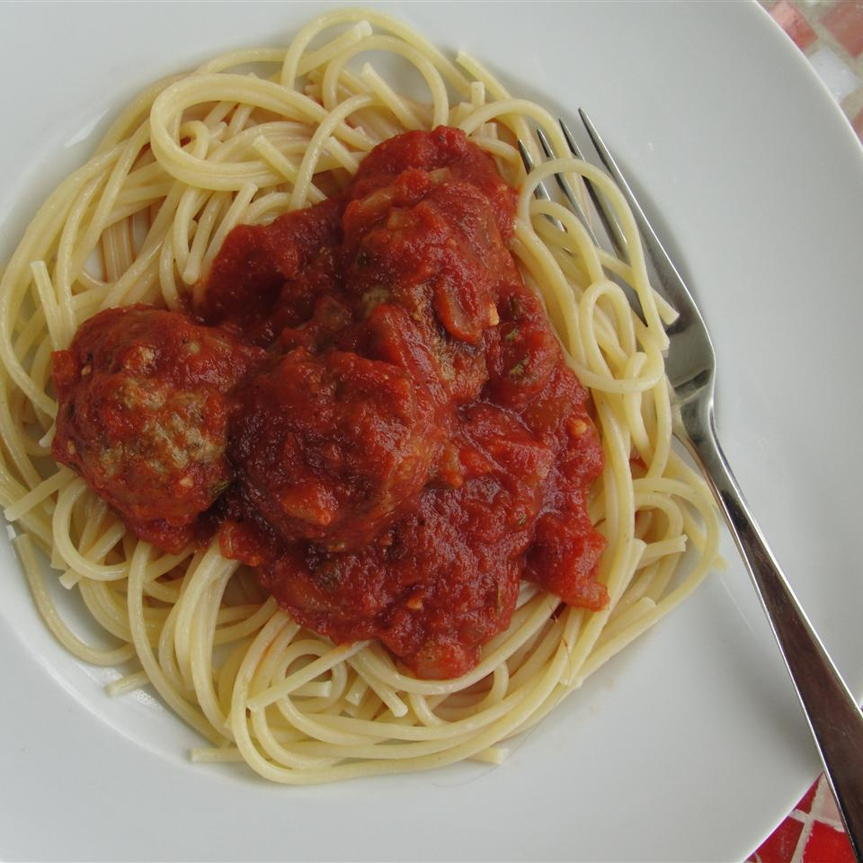

Spaghetti Sauce

Description
This is a quick n' dirty recipe for some wonderful pasta sauce.
Easy to make and even easier to eat, that's what I always hope for.
None of those extraneous vegetables, this recipe is friendly to picky eaters!
Ingredients
- 1 teaspoon of olive oil
- 1 teaspoon of garlic
- 14 ounces of peeled and diced tomatoes
- A half tablespoon of basil
- A half tablespoon of oregano
- A pinch of white sugar
Steps
- Heat oil in a large saucepan over medium heat
- Cook garlic for a minute
- Stir in the other ingredients
- Bring to a boil
- Reduce heat to low and then simmer for 20 minutes
- Enjoy!